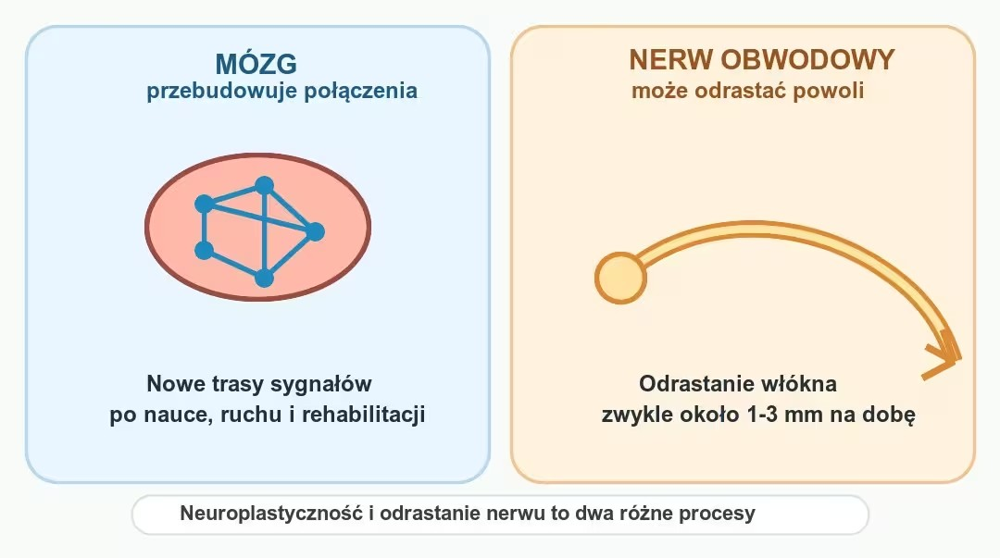

Szybka odpowiedź
„Regeneracja układu nerwowego” nie jest jednym procesem. Uszkodzony nerw obwodowy może odrastać, jeśli zachowane są odpowiednie warunki anatomiczne, natomiast mózg i rdzeń mają znacznie ograniczoną regenerację aksonów. Poprawa funkcji często wynika z neuroplastyczności i rehabilitacji, nie odtworzenia tkanki. Nagłe osłabienie jednej strony, opadnięcie twarzy lub zaburzenia mowy wymagają natychmiastowej pomocy.
Kluczowe wnioski
- Nerwy obwodowe i ośrodkowy układ nerwowy różnią się zdolnością do odrostu po uszkodzeniu.
- Neuroplastyczność oznacza zmianę działania i organizacji sieci, a nie automatyczne powstawanie nowych neuronów.
- Tempo około 1 mm dziennie bywa orientacją po naprawie nerwu obwodowego, lecz nie przewiduje wyniku każdej osoby.
- Rehabilitacja jest celowana do rozpoznania; suplement nie zastępuje diagnostyki ucisku, niedoboru, cukrzycy ani udaru.
Czym różni się regeneracja nerwu od neuroplastyczności?
Regeneracja obwodowa może oznaczać odrost aksonu od miejsca uszkodzenia w kierunku mięśnia lub skóry. Neuroplastyczność to zmiana siły połączeń, strategii ruchu i organizacji sieci pod wpływem treningu lub uszkodzenia. Poprawa sprawności po udarze może więc wynikać z uczenia się układu, mimo że zniszczona tkanka nie została odtworzona.
Rehabilitację neurologiczną dobiera się do rozpoznania, co podkreśla zasada diagnostyki przed planem.

Czy nerw obwodowy odrasta 1 mm dziennie?
Około 1 mm na dobę to często używana orientacja dla rosnącego aksonu po właściwej naprawie, a nie zegar gwarantujący czucie lub siłę. Wynik zależy od rodzaju i poziomu uszkodzenia, ciągłości osłonek, odległości do celu, wieku, czasu do leczenia oraz stanu mięśnia. Czasem konieczna jest operacja.
Narastające drętwienie lub osłabienie wymaga ustalenia przyczyny zamiast czekania według matematycznego terminu. Objawy korzeniowe i obrazowanie omawia poradnik o dyskopatii po 50-tce.
Co ruch może zmienić w mózgu i układzie nerwowym?
Regularny trening może poprawiać funkcje poznawcze i sprawność oraz zmieniać część markerów związanych z plastycznością. Nie dowodzi to jednak „odrastania całego układu nerwowego”. Program powinien łączyć bezpieczny ruch tlenowy, siłę, równowagę i zadania specyficzne dla utraconej funkcji, szczególnie po chorobie neurologicznej.
Prosty start dla osoby bez ostrego deficytu daje plan treningu 3x30.
Które objawy wymagają pilnej diagnostyki?
Dzwoń po pomoc przy nagłym opadnięciu twarzy, osłabieniu lub drętwieniu jednej strony, zaburzeniu mowy, widzenia, równowagi albo bardzo silnym nowym bólu głowy. Pilnej oceny wymaga też postępujące osłabienie kończyn, zaburzenie oddawania moczu z drętwieniem krocza lub osłabienie po urazie. Nie czekaj na „regenerację”.
Sen wspiera funkcjonowanie, ale nie leczy ostrego uszkodzenia; jego realną rolę opisuje poradnik snu po 50-tce.
| Sytuacja | Dominujący mechanizm | Co decyduje o planie? |
|---|---|---|
| Uszkodzenie nerwu obwodowego | Możliwy odrost aksonu | Typ uszkodzenia i ciągłość nerwu |
| Udar mózgu | Plastyczność i uczenie funkcji | Lokalizacja, czas i rehabilitacja |
| Uraz rdzenia | Ograniczona regeneracja i kompensacja | Poziom oraz kompletność urazu |
| Nieswoiste mrowienie | Nieznana przyczyna | Diagnostyka zamiast suplementu |
Funkcja może wracać dzięki odrostowi, plastyczności, kompensacji i treningowi — tych mechanizmów nie wolno wrzucać do jednego hasła.
Najczęściej zadawane pytania
Czy układ nerwowy regeneruje się po 50-tce?
Możliwa jest poprawa, ale mechanizm i zakres zależą od miejsca, rodzaju uszkodzenia, czasu leczenia i rehabilitacji.
Czy nerwy zawsze rosną 1 mm dziennie?
Nie. To orientacyjna wartość dla wybranych nerwów obwodowych, a odzyskanie funkcji zależy od wielu dodatkowych warunków.
Czy BDNF oznacza powstawanie nowych neuronów?
Nie. Zmiana stężenia markera nie jest równoznaczna z odtworzeniem uszkodzonej tkanki nerwowej u człowieka.
Jaki suplement regeneruje nerwy?
Nie ma uniwersalnego suplementu. Leczy się konkretną przyczynę, np. niedobór, ucisk, cukrzycę lub uraz, po właściwej diagnostyce.
Źródła
- WHO rehabilitation interventions - neurological conditions
- Exercise and neuroplasticity in neurological disease
- Exercise dose and cognition in aging
- Exercise and brain volume - meta-analysis
- Przegląd: regeneracja nerwów obwodowych i reinerwacja mięśni
- NINDS/NIH — objawy udaru i zasada FAST
- NHS — objawy alarmowe zespołu ogona końskiego
Uwaga: Artykuł ma charakter informacyjny i edukacyjny. Nie zastępuje konsultacji, diagnozy ani indywidualnego leczenia.